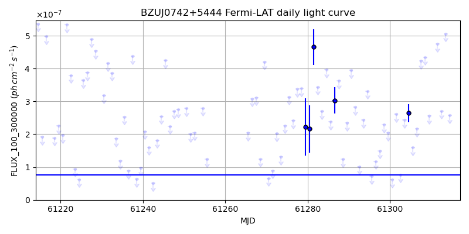
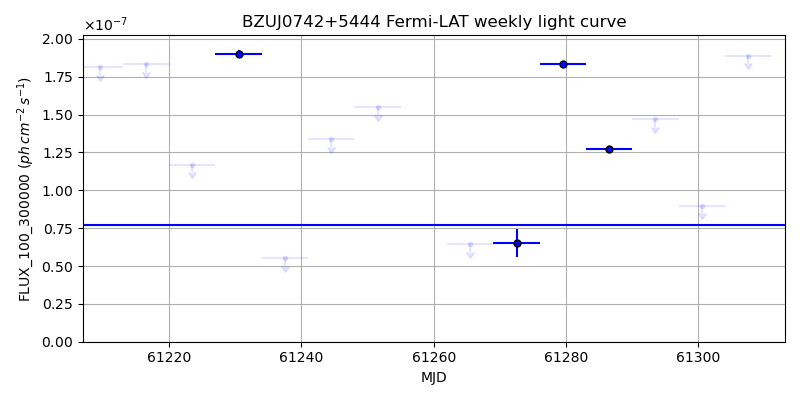
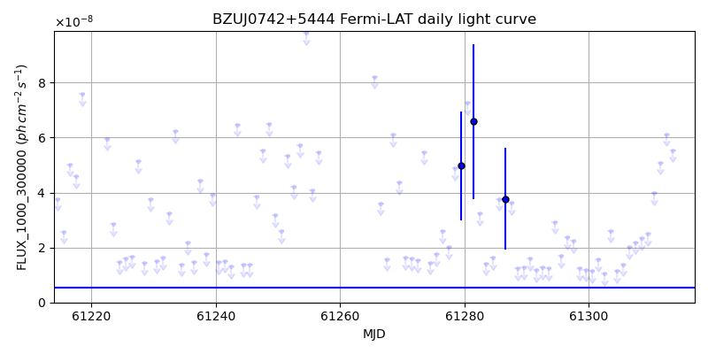
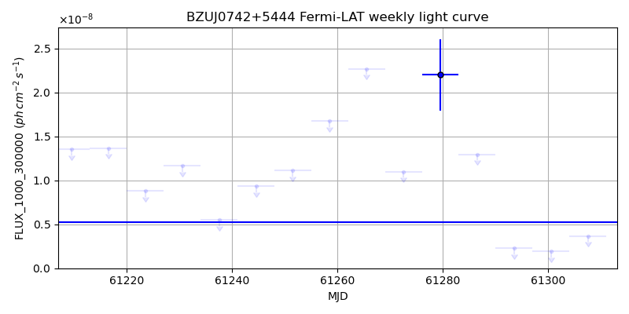

LAT Lightcurve site: https://fermi.gsfc.nasa.gov/ssc/data/access/lat/msl_lc/source/BZU_J0742p5444
NED: Query
Time of last update of this page: UT: 2026-10-02 15:19 (MJD: 61315.639)
| Property | Value |
|---|---|
| R.A. | 7:42:39.84 |
| Dec. | 54:44:24.0 |
| z | 0.720 |
| 3FGL SpectrumType | LogParabola |
| 3FGL PL Index | |
| 3FGL Flux_100_300000 | 7.70e-08 1 / (s cm2) |
| 3FGL Flux_1000_300000 | 5.28e-09 1 / (s cm2) |
| 3FGL Flux >200 GeV | 2.84e-12 1 / (s cm2) |
| 3FGL Extrap. Crab >200 GeV | 0.01 |
| 3FGL Flux After EBL Absorption >200GeV | 1.78e-13 1 / (s cm2) |
| 3FGL EBL Crab Fraction >200GeV | 0.00 |

| MJD | dMJD | Flux | dFlux | Frac3FGL | FracCrab>200GeV | EBLFracCrab>200GeV |
|---|---|---|---|---|---|---|
| 61310.50 | 0.50 | 6.05e-07 | 0.00e+00 | 0.00 | 0.00 | 0.00 |
| 61311.50 | 0.50 | 4.76e-07 | 0.00e+00 | 0.00 | 0.00 | 0.00 |
| 61312.50 | 0.50 | 2.71e-07 | 0.00e+00 | 0.00 | 0.00 | 0.00 |
| 61313.50 | 0.50 | 5.06e-07 | 0.00e+00 | 0.00 | 0.00 | 0.00 |
| 61314.50 | 0.50 | 2.57e-07 | 0.00e+00 | 0.00 | 0.00 | 0.00 |

| MJD | dMJD | Flux | dFlux | Frac3FGL | FracCrab>200GeV | EBLFracCrab>200GeV |
|---|---|---|---|---|---|---|
| 61279.50 | 3.50 | 1.83e-07 | 1.81e-09 | 2.38 | 0.03 | 0.00 |
| 61286.50 | 3.50 | 1.27e-07 | 2.34e-09 | 1.65 | 0.02 | 0.00 |
| 61293.50 | 3.50 | 1.47e-07 | 0.00e+00 | 0.00 | 0.00 | 0.00 |
| 61300.50 | 3.50 | 8.99e-08 | 0.00e+00 | 0.00 | 0.00 | 0.00 |
| 61307.50 | 3.50 | 1.89e-07 | 0.00e+00 | 0.00 | 0.00 | 0.00 |

| MJD | dMJD | Flux | dFlux | Frac3FGL | FracCrab>200GeV | EBLFracCrab>200GeV |
|---|---|---|---|---|---|---|
| 61310.50 | 0.50 | 3.97e-08 | 0.00e+00 | 0.00 | 0.00 | 0.00 |
| 61311.50 | 0.50 | 5.09e-08 | 0.00e+00 | 0.00 | 0.00 | 0.00 |
| 61312.50 | 0.50 | 6.12e-08 | 0.00e+00 | 0.00 | 0.00 | 0.00 |
| 61313.50 | 0.50 | 5.54e-08 | 0.00e+00 | 0.00 | 0.00 | 0.00 |
| 61314.50 | 0.50 | 1.24e-07 | 0.00e+00 | 0.00 | 0.00 | 0.00 |

| MJD | dMJD | Flux | dFlux | Frac3FGL | FracCrab>200GeV | EBLFracCrab>200GeV |
|---|---|---|---|---|---|---|
| 61279.50 | 3.50 | 2.20e-08 | 4.05e-09 | 4.16 | 0.05 | 0.00 |
| 61286.50 | 3.50 | 1.29e-08 | 0.00e+00 | 0.00 | 0.00 | 0.00 |
| 61293.50 | 3.50 | 2.28e-09 | 0.00e+00 | 0.00 | 0.00 | 0.00 |
| 61300.50 | 3.50 | 1.94e-09 | 0.00e+00 | 0.00 | 0.00 | 0.00 |
| 61307.50 | 3.50 | 3.67e-09 | 0.00e+00 | 0.00 | 0.00 | 0.00 |
--------------------------------------------------------- Using user-supplied coords: 7:42:39.84 54:44:24.0 2000 --------------------------------------------------------- FLWO UT night of: 2026-10-03 Local Sid. @ Midnight: 00:24 Sunset (-15.0) (local, UT): 19:14 02:14 Sunrise (-15.0) (local, UT): 05:12 12:12 Moonrise (local, UT): 22:48 05:48 Moonset (local, UT): Moon phase: 0.53 --------------------------------------------------------- AzTime LSID UT Obj_el Obj_az Mn_el Mn_az Sep. --------------------------------------------------------- 19:14 19:37 02:14 -2.2 358.9 -28.5 20.1 32.0 19:44 20:07 02:44 -2.2 3.3 -26.2 26.7 31.9 20:14 20:37 03:14 -1.7 7.6 -23.2 32.8 31.7 20:44 21:07 03:44 -1.0 11.8 -19.6 38.5 31.6 21:14 21:37 04:14 0.2 15.9 -15.7 43.6 31.4 21:44 22:07 04:44 2.0 19.7 -11.3 48.4 31.3 22:14 22:37 05:14 4.2 23.4 -6.5 52.7 31.2 22:44 23:07 05:44 6.8 26.8 -0.8 56.7 31.0 23:14 23:37 06:14 9.9 29.9 3.8 60.4 30.9 23:44 00:07 06:44 13.2 32.8 9.1 63.9 30.8 00:14 00:38 07:14 16.7 35.3 14.6 67.1 30.6 00:44 01:08 07:44 20.5 37.5 20.3 70.2 30.5 01:14 01:38 08:14 24.5 39.4 26.1 73.1 30.4 01:44 02:08 08:44 28.6 40.9 32.1 76.0 30.3 02:14 02:38 09:14 32.9 42.0 38.1 78.8 30.2 02:44 03:08 09:44 37.2 42.7 44.2 81.7 30.2 03:14 03:38 10:14 41.5 42.8 50.3 84.8 30.1 03:44 04:08 10:44 45.9 42.2 56.5 88.1 30.0 04:14 04:38 11:14 50.1 40.8 62.7 91.9 30.0 04:44 05:08 11:44 54.2 38.4 68.9 96.9 29.9 05:12 05:37 12:12 57.8 35.0 74.7 103.8 29.9 --------------------------------------------------------- Dark hours >55 deg.: 0.00